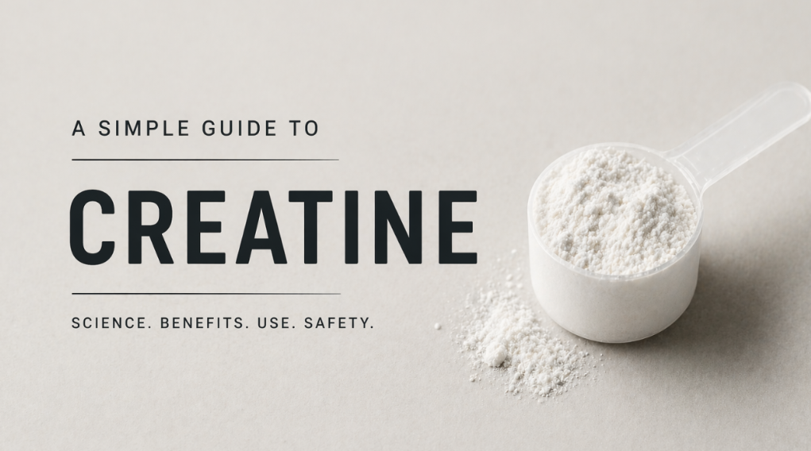

Why Creatine Is More Than a Muscle Supplement
We often treat the human body like a black box—inputs go in, results come out, and we rarely stop to look at the mechanisms in between. In the world of performance and health, few molecules are as misunderstood, yet as thoroughly researched, as Creatine (Cr).
For many, the word "creatine" still conjures images of bulked-up gym-goers and shaker bottles. But as I have spent the last few months looking into the cellular engineering behind it, I have realized that view is incredibly narrow. Creatine is not just about "gains"; it is a fundamental component of how our cells manage energy, focus, and longevity.
